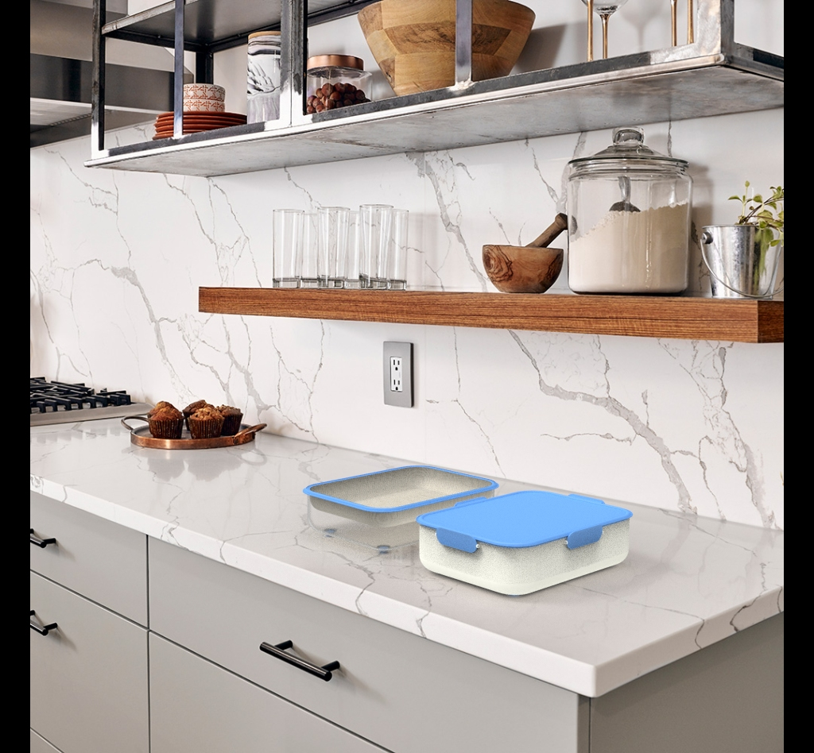
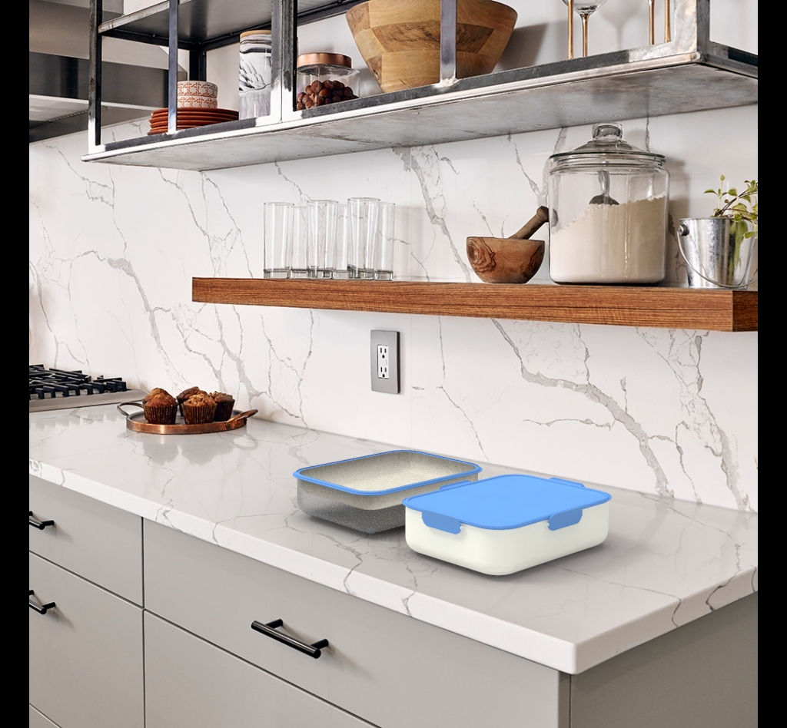

KeyShot
Render 3D

armado alta · vista hero


Salidas raster desde modelo 3D — iluminación y materiales en KeyShot (no fotografía de producto).
armado alta · vista hero

CON YOGURT · producto armado

tapa voladora

explotado completo

explotado completo · variante

abierto sin yog

desarmado · fondo panel

desarmado · fondo panel · variante

desarmado con contexto

desarmado con contexto · toma 13

desarmado con contexto · toma 12

desarmado con contexto · toma 11

desarmado

desarmado · base